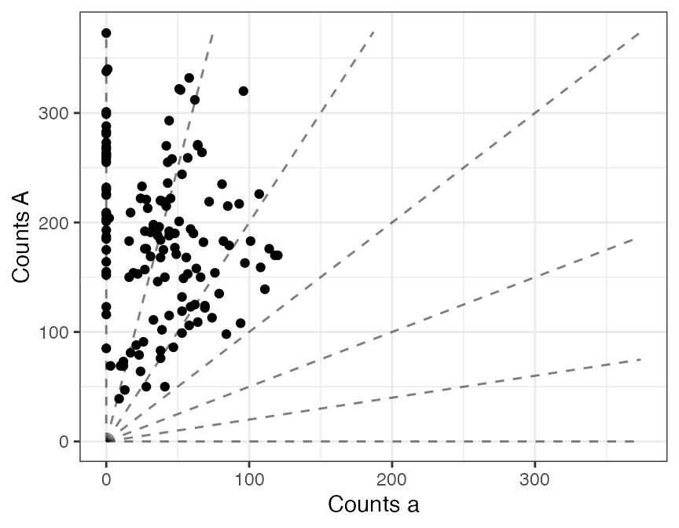
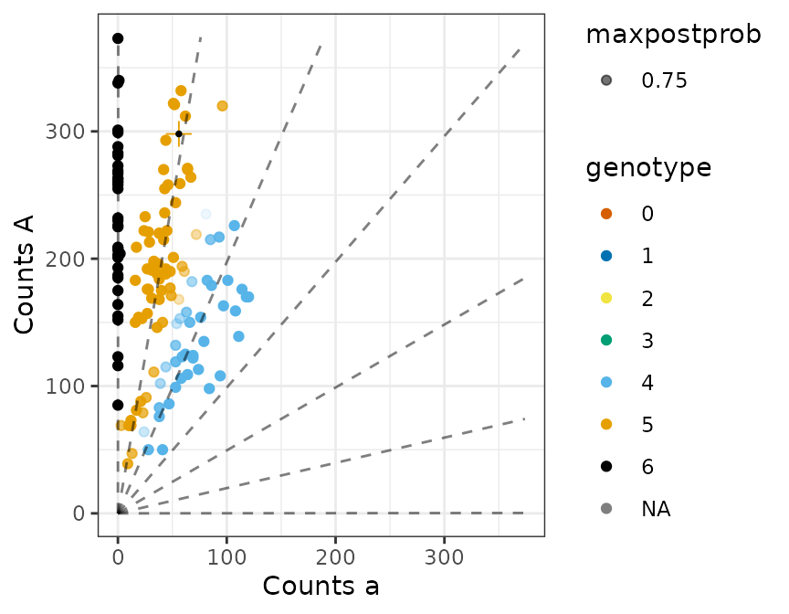

smells_like_updog.RmdUpdog is a package containing empirical Bayes approaches to genotype individuals (particularly polyploids) from next generation sequencing (NGS) data. We had in mind NGS data that results from a reduced representation library, such as “genotyping-by-sequencing” (GBS) (Elshire 2011) or “restriction site-associated DNA sequencing” (RAD-seq) (Baird 2008).
Updog wields the power of hierarchical modeling to account for some key features of NGS data overlooked in most other analyses, particularly allelic bias and overdispersion. Updog will also automatically account for sequencing errors.
To efficiently account for these features, updog needs to know the distribution of the individual genotypes in the population. The function flexdog can accurately estimate this distribution under a wide variety of situations.
You can read more about the updog method in Gerard et al. (2018).
In this vignette, we will go through one example of fitting flexdog on an S1 population of individuals.
Load updog and the snpdat dataset. The data frame snpdat contains three example SNPs (single nucleotide polymorphisms) from the study of Shirasawa et al. (2017). The individuals in this dataset resulted from a single generation of selfing (an S1 population). You can read more about it by typing ?snpdat.
We’ll extract the First SNP.
smalldat <- snpdat[snpdat$snp == "SNP1", c("counts", "size", "id")]
head(smalldat)
#> # A tibble: 6 x 3
#> counts size id
#> <int> <int> <chr>
#> 1 298 354 Xushu18
#> 2 187 187 Xushu18S1-001
#> 3 201 201 Xushu18S1-002
#> 4 157 184 Xushu18S1-003
#> 5 175 215 Xushu18S1-004
#> 6 283 283 Xushu18S1-005We will separate the counts between the children and the parent (the first individual). Note that you do not need the parental counts to fit updog, but they can help improve estimates of the parameters in the updog model.
pref <- smalldat$counts[1]
psize <- smalldat$size[1]
oref <- smalldat$counts[-1]
osize <- smalldat$size[-1]
ploidy <- 6 # sweet potatoes are hexaploidWe can first use plot_geno to visualize the raw data.
plot_geno(refvec = oref, sizevec = osize, ploidy = ploidy)
Now we use the flexdog function to fit the model. We use model = "s1" because the individuals resulted from one generation of selfing of the same parent.
uout <- flexdog(refvec = oref,
sizevec = osize,
ploidy = ploidy,
model = "s1",
p1ref = pref,
p1size = psize)
#> Fit: 1 of 5
#> Initial Bias: 0.3678794
#> Log-Likelihood: -592.9507
#> Keeping new fit.
#>
#> Fit: 2 of 5
#> Initial Bias: 0.6065307
#> Log-Likelihood: -592.9506
#> Keeping new fit.
#>
#> Fit: 3 of 5
#> Initial Bias: 1
#> Log-Likelihood: -538.1967
#> Keeping new fit.
#>
#> Fit: 4 of 5
#> Initial Bias: 1.648721
#> Log-Likelihood: -538.1963
#> Keeping new fit.
#>
#> Fit: 5 of 5
#> Initial Bias: 2.718282
#> Log-Likelihood: -538.1963
#> Keeping old fit.
#>
#> Done!We use plot.flexdog to visualize the fit. Points are color coded according to the genotype with the highest posterior probability. For example, a genotype of “4” represents four copies of the reference allele and two copies of the alternative allele (AAAAaa). The level of transparency is proportional to the maximum posterior probability. This is equivalent to the posterior probability that this genotype estimate is correct. The lines represent the mean counts at a given genotype. The “+” symbol with a black dot is the location of the parent.
plot(uout)
For downstream analyses, you might want to filter out poorly behaved SNPs. These SNPs might be poorly behaved for a variety of reasons (they might not be real SNPs, it might be much more very difficult to map one allele to the correct location relative to the other allele, etc). Updog gives you some measures to filter out these SNPs.
The most intuitive measure would be the (posterior) proportion of individuals mis-genotyped:
uout$prop_mis
#> [1] 0.04216397For this SNP, we expect about 4.22 percent of the individuals to be mis-genotyped. The specific cutoff you use is context and data dependent. But as a starting point, you could try a loose cutoff by keeping SNPs only if they have a prop_mis of less than 0.2.
From our simulation studies, we also generally get rid of SNPs with overdispersion parameters greater than 0.05 or SNPs with bias parameters either less than 0.5 or greater than 2. However, if you have higher or lower read depths than what we looked at in our simulations, you should adjust these levels accordingly.
Baird, Paul D. AND Atwood, Nathan A. AND Etter. 2008. “Rapid SNP Discovery and Genetic Mapping Using Sequenced RAD Markers.” PLOS ONE 3 (10). Public Library of Science: 1–7. doi:10.1371/journal.pone.0003376.
Elshire, Jeffrey C. AND Sun, Robert J. AND Glaubitz. 2011. “A Robust, Simple Genotyping-by-Sequencing (GBS) Approach for High Diversity Species.” PLOS ONE 6 (5). Public Library of Science: 1–10. doi:10.1371/journal.pone.0019379.
Gerard, David, Luís Felipe Ventorim Ferrão, Antonio Augusto Franco Garcia, and Matthew Stephens. 2018. “Genotyping Polyploids from Messy Sequencing Data.” Genetics 210 (3). Genetics: 789–807. doi:10.1534/genetics.118.301468.
Shirasawa, Kenta, Masaru Tanaka, Yasuhiro Takahata, Daifu Ma, Qinghe Cao, Qingchang Liu, Hong Zhai, et al. 2017. “A High-Density SNP Genetic Map Consisting of a Complete Set of Homologous Groups in Autohexaploid Sweetpotato (Ipomoea Batatas).” Scientific Reports 7. Nature Publishing Group. doi:10.1038/srep44207.